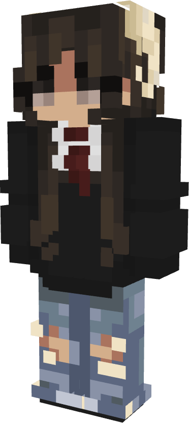

| souponline / soup any pronouns . elytrian . malicious |
||||||
| soup is a LITTLE FREAK with love in her heart but also not really. she's an elytrian but is shitballs at flying but it means that most of her builds are in the air. when she joined she created a home in shape of THE ORB in order for her to feel some sort of familiarity. soup is now a farmer and whispers weird things to the villagers for cheaper prices. she wears chainmail and flies around a lot. appearance black hair in a bob-cut with twin braids down the front. white oxford shirt with red tie & a black crewneck cardigan. ripped jeans or brown slacks. ram horns (for no particular reason). elytra wings are similar to the mizuno's texture pack's elytra example here young-adult aged. "short" stature but not an outlier. shorter than iggy, so origin soup is an elytrian therefore she has these benefits/disadvantages: + permanent elytra + 20 block boost every 30s + 2x damage in the air - weak&slow under buildings - light armor the orb soup's primary "lore" revolves around the orb. see page labelled accordingly silly disclaimer i'm not really inclined on telling a serious or in-depth story. soup is just an overexaggerated persona and a silly character. her story comes from the "pondering the orb" meme. if anything reads as offensive/etc. hit me up i will remove it. be nice & have fun :) |
check out this orb -- | | -- pretty cool right |
iggy soup and iggy are homies. despite the religious affiliation and the fact that iggy towers feet over her, soup does not really care for or about iggy's past. soup is all about the present (and the future) but mostly, she thinks iggy is just a bit silly. chunksquad (soup, iggy, james, luka, bo) #chunksquad4lyfe |
wip | wip | wip |  |